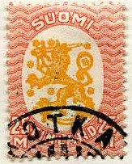
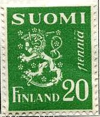

Return To Catalogue - 1856 issue - 1860-1874 issues - 1875-1890 issues - Finland 1891-1916 - Aunus - Carelia - Local issues for Helsingfors and Tammerfors - Miscellaneous
Note: on my website many of the
pictures can not be seen! They are of course present in the
catalogue;
contact me if you want to purchase the catalogue.

5 p green 5 p grey 10 p red 10 p green 10 p blue 20 p yellow 20 p red 20 p brown 25 p blue 25 p brown 30 p green 40 p lilac 40 p green 50 p brown 50 p green 50 p blue 60 p lilac 75 p yellow 1 M red and black 1 M orange 1 1/2 M green and lilac 2 M green and black 2 M blue 3 M blue and black 5 M lilac and black 10 M brown and black 25 M red and yellow Surcharged


10 on 5 p green (as 75 on 20 shown above) 20 on 10 p red (as 75 on 20) 30 p on 10 p green 50 on 25 p blue (as 75 on 20) 60 p on 40 p lilac (as 30 on 10) 75 on 20 p yellow 90 p on 20 p red (as 30 on 10) 1 1/2 M on 50 p blue (as 30 on 10) Overprinted 'Postim. naytt. Frim utstalln.' (philatelic exhibition)
1 M orange 1 1/2 M green and lilac
All these stamps are perforated 14.
Value of the stamps |
|||
vc = very common c = common * = not so common ** = uncommon |
*** = very uncommon R = rare RR = very rare RRR = extremely rare |
||
| Value | Unused | Used | Remarks |
No watermark (1918) |
|||
| 5 p green | c | vc | |
| 5 p grey | vc | vc | |
| 10 p red | c | vc | |
| 10 p green | c | c | |
| 10 p blue | c | vc | |
| 20 p yellow | c | c | |
| 20 p red | c | c | |
| 20 p brown | c | c | |
| 25 p blue | c | c | |
| 25 p brown | c | c | |
| 30 p green | c | c | |
| 40 p lilac | c | vc | |
| 40 p green | c | c | |
| 50 p brown | * | c | |
| 50 p blue | * | c | |
| 50 p green | * | c | |
| 60 p lilac | * | c | |
| 75 p yellow | * | c | |
| 1 M red and black | * | vc | |
| 1 M orange | ** | ** | |
| 2 M green and black | * | c | |
| 2 M blue | ** | c | |
| 3 M blue and black | ** | c | |
| 5 M lilac and black | ** | c | |
| 10 M brown and black | *** | * | |
| 25 M red and yellow | *** | *** | |
| 10 p on 5 p | c | c | |
| 20 p on 10 p | c | c | |
| 30 p on 10 p | c | c | |
| 50 p on 25 p | c | c | |
| 60 p on 40 p | * | c | |
| 75 p on 20 p | c | c | |
| 90 p on 20 p | * | c | |
| 1 1/2 M on 50 p | * | c | |
| With watermark 'Crosses' (1925) | |||
| 10 p blue | c | c | |
| 20 p brown | c | c | |
| 25 p brown | c | c | |
| 30 p green | c | c | |
| 40 p green | * | c | |
| 50 p green | * | c | |
| 60 p lilac | * | c | |
| 1 M orange | * | vc | |
| 1 1/2 M green and lilac | ** | vc | |
| 2 M blue | ** | c | |
| 3 M blue and black | ** | c | |
| 5 M lilac and black | *** | * | |
| 10 M brown and black | *** | *** | |
| 25 M red and yellow | R | R | |
| With watermark 'Posthorn' (1927) | |||
| 20 p brown | c | c | |
| 40 p green | c | c | |
| 50 p green | * | c | |
| 1 M orange | * | vc | |
| 1 1/2 M green and lilac | * | vc | |
| 2 M blue | * | c | |
| 3 M blue and black | * | c | |
| 10 M brown and black | *** | *** | |
| 25 M red and yellow | *** | *** | |
| 1 M | ** | ** | Philatelic exh. overprint |
| 1 1/2 M | ** | ** | Philatelic exh. overprint |
5 p green 10 p red 30 p blue 40 p lilac 50 p brown 70 p brown 1 M red and grey 5 M lilac and grey
These stamps have perforation 11.
Value of the stamps |
|||
vc = very common c = common * = not so common ** = uncommon |
*** = very uncommon R = rare RR = very rare RRR = extremely rare |
||
| Value | Unused | Used | Remarks |
| 5 p | c | c | |
| 10 p | c | c | |
| 30 p | c | c | |
| 40 p | c | c | |
| 50 p | * | * | |
| 70 p | * | * | |
| 1 M | * | * | |
| 5 M | R | R | |
1 M + 50 p grey and red
This stamp has perforation 14.
Value of the stamps |
|||
vc = very common c = common * = not so common ** = uncommon |
*** = very uncommon R = rare RR = very rare RRR = extremely rare |
||
| Value | Unused | Used | Remarks |
| 1 M + 50 p | * | * | |

1 1/2 M violet 2 M blue
These stamps have perforation 14 and watermark 'Posthorn'
Value of the stamps |
|||
vc = very common c = common * = not so common ** = uncommon |
*** = very uncommon R = rare RR = very rare RRR = extremely rare |
||
| Value | Unused | Used | Remarks |
| 1 1/2 M | * | * | |
| 2 M | * | * | |
1 M grey (ship) 1 1/2 M brown (church) 2 M grey (building)
1 M + 10 p orange and red (flag) 1 1/2 M + 15 p green and red (flag, different design) 2 M + 20 p blue and red (ship)

5 p brown 10 p violet 20 p green 25 p brown 40 p green 50 p yellow 50 p green 60 p grey 75 p red 1 M red 1 M green 1.20 M red 1.25 M yellow 1 1/2 M violet 1 1/2 M red 1 1/2 M grey 1.75 M yellow 2 M blue 2 M lilac 2 M red 2 M orange 2 M green 2 1/2 M blue 2.75 M violet 3 M olive 3 M red 3 M orange 3 1/2 M blue 3 1/2 M green 4 M green 4 1/2 M blue 5 M blue 5 M violet 5 M orange 6 M red 8 M violet 10 M blue 10 M orange 10 M violet? 12 M ? 15 M lilac 20 M blue Surcharged '50 PEN.' on 40 p green '1,25 MK.' on 50 p yellow 'mk 1:75 =' on 1.25 M yellow '2 MARKKAA =' on 1 1/2 M red 'mk 2:75 =' on 2 M red Overprinted 'KENTIA-POSTI FALTPOST' (field post) 2 M orange 3 1/2 M blue
Some of these stamps exist (in changed colors) with overprint 'ITA- KARJALA Sot.hallinto'.
5 M blue (building, castle?) 10 M violet (landscape) 25 M brown (tree cutting)
The values 5 M and 10 M exist (in changed colors) with overprint 'ITA- KARJALA Sot.hallinto'.
1 M + 10 p grey and red 1 1/2 M + 15 p brown and red 2 M + 20 p blue and red
{kind=link}